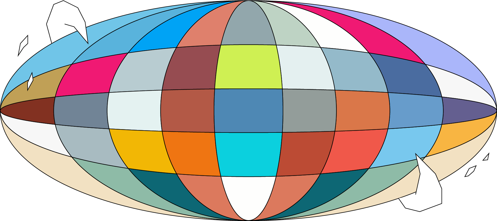

<연결된 (Connected)>
‘우리를 연결하고 있는 얄따란 끈들을 느끼는 것. 조금씩 조금씩 유의미한 떨림을 만들어내는 것. 우리는 같지 않아도 연결될 수 있다. 우리가 같기 때문에 연결되어야 한다면, 그것에 우리는 연대라고 이름 붙일 수 없다. 나는 너와 다르지만, 너의 고통에 공감할 수 있기 때문에 연결된다는 것. 거기에서 연대와 우리라는 감각이 솟아오른다. 마치 눈을 오래 마주보면 알게되는 것처럼.’
글 권태현, <눈과 눈 사이에서>
온수공간에서 열린 전시 <눈을 오래 마주 보아야 합니다>의 글을 빌려왔습니다. ‘연결’은 오늘날 공동체 구성원인 우리에게 빼놓을 수 없는 감각이라 생각합니다. 그러나 때로는 얄따란 끈이 너무 얄따라서 보려고 애쓰지 않고, 들으려고 애쓰지 않으면 어느순간 처음부터 연결된 적 없던 것 처럼 느껴지는 존재들이 있을 겁니다. 그렇지만 ‘목소리 없는 자’란 존재하지 않고 오직 ‘듣지 않으려는 의지’만 있을 뿐이라던 어느 활동가의 뼈 아픈 지적 처럼 우리는 사실 늘 연결되어있습니다.
<연결된 (Connected)>은 유기적으로든 무기적으로든 나의 고통과 행복은 늘 누군가의 고통과 행복에 연결되어 있다는 소중한 감각에 대해 이야기 하고자 합니다.
